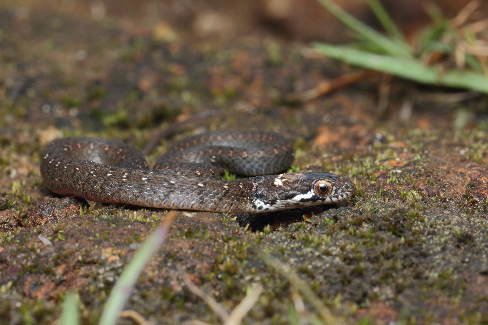
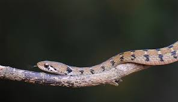
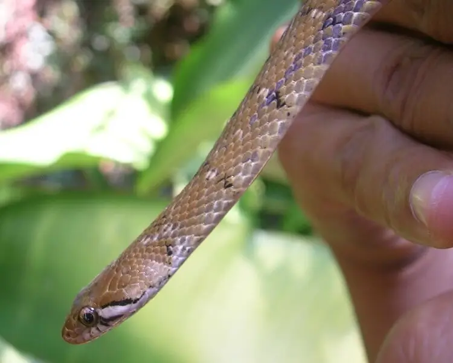
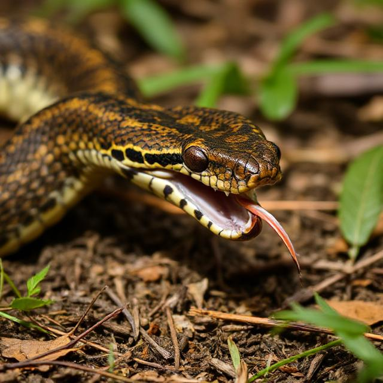

The Nilgiri Keelback (Amphiesma beddomei) is a non-venomous snake endemic to the Western Ghats of India, primarily found in the Nilgiri Hills and surrounding regions of Kerala, Tamil Nadu, and Karnataka.
This slender, medium-sized snake typically grows between 40–60 cm and has keeled scales, giving it a rough texture.
Its coloration varies from olive-green to brown, often with a reddish or orange tinge, and it features a distinct black stripe running from behind the eye to the neck.
Preferring moist habitats, it thrives near streams, waterfalls, and wet forests, where it preys on amphibians, small fish, and insects.
The Nilgiri Keelback is diurnal and non-aggressive, often fleeing when disturbed but may flatten its body or release a foul-smelling musk as a defense mechanism.
Though harmless to humans, its population may be affected by habitat destruction, making conservation efforts important for its survival.

Physical Characteristics
The Nilgiri Keelback (Amphiesma beddomei) is a slender, medium-sized snake typically measuring between 40–60 cm, with some individuals reaching up to 70 cm.
It has a distinct olive-green to brown coloration, often with a reddish or orange tinge, helping it blend into its forested surroundings.
Its keeled scales give the body a rough texture, aiding in camouflage among leaf litter and rocky terrains.
The head is slightly distinct from the neck, with large, round eyes that indicate its diurnal nature.
When threatened, the Nilgiri Keelback may flatten its body and release a foul-smelling musk as a defense mechanism.
Despite its striking appearance, this non-venomous species is harmless to humans and plays an important ecological role in controlling amphibian populations in its habitat.

Habitat
The Nilgiri Keelback (Amphiesma beddomei) is endemic to the Western Ghats of India, particularly in the Nilgiri Hills and surrounding regions of Tamil Nadu, Kerala, and Karnataka.
It thrives in moist, high-altitude environments, including evergreen forests, montane grasslands, and areas near streams, waterfalls, and marshes.
This semi-aquatic species prefers habitats with high humidity and dense vegetation, often found near rocky crevices, under leaf litter, or along riverbanks.
It is most commonly seen at elevations between 800–2,000 meters above sea level.
Due to its dependence on freshwater ecosystems, habitat destruction and pollution pose significant threats to its survival.

Diet and Behavior
The Nilgiri Keelback (Amphiesma beddomei) primarily feeds on amphibians, such as frogs and tadpoles, which are abundant in its moist habitat.
It may also consume small fish, insects, and other invertebrates.
Being a diurnal species, it is most active during the day, foraging along forest floors, near streams, and in marshy areas.
This snake is non-aggressive and relies on camouflage and swift movement to avoid predators.
When threatened, it may flatten its body, adopt a defensive posture, or release a foul-smelling musk as a deterrent.
Despite its defensive behaviors, it is harmless to humans and plays a vital role in controlling amphibian populations within its ecosystem.

Bite & Jaw Mechanism
The Nilgiri Keelback (Amphiesma beddomei) has a non-venomous bite and lacks specialized fangs for venom injection.
It possesses small, sharp, recurved teeth designed for gripping slippery prey like frogs and fish.
Like other keelbacks, its jaw mechanism is highly flexible, allowing it to expand its mouth to accommodate larger prey.
The upper and lower jaws move independently, aiding in swallowing prey whole.
Though generally docile, if provoked, it may bite in self-defense, but its bite is harmless to humans, causing only minor scratches or discomfort.
Its primary defense, however, is escape or the release of a foul-smelling musk rather than biting.